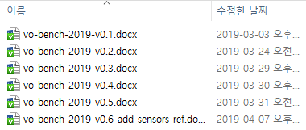
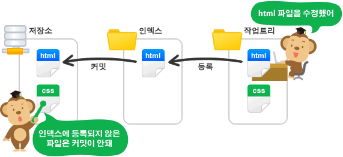
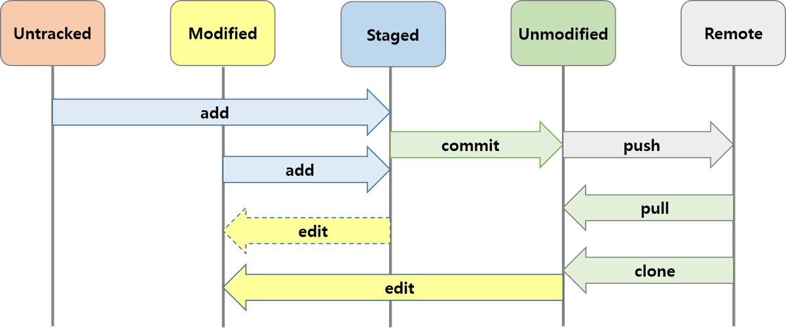
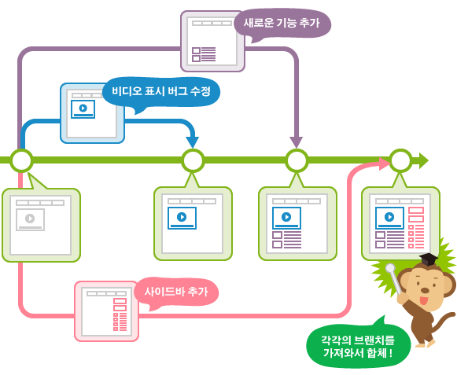
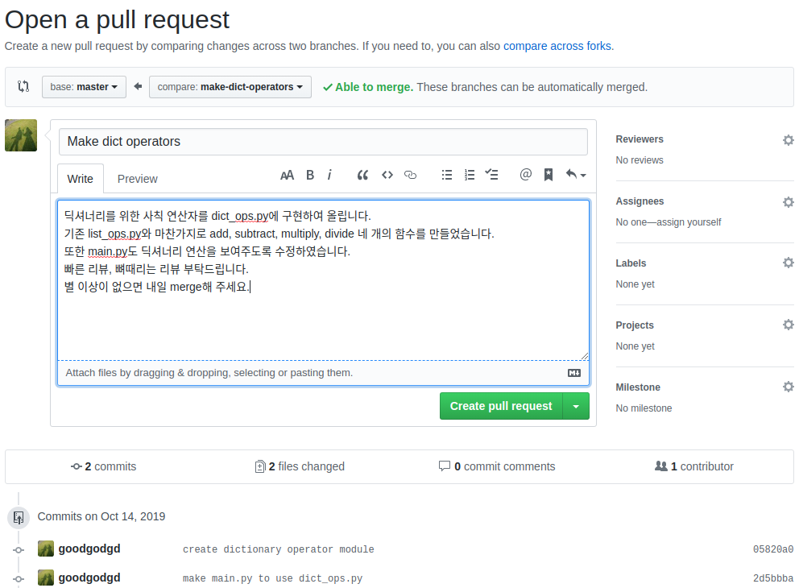
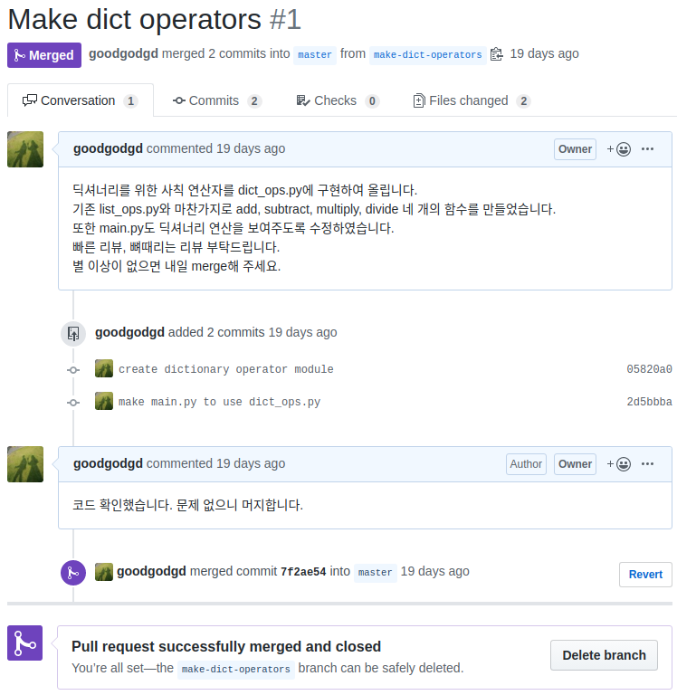

git 명령어를 정리한 자료가 하나 있다. 815줄이고 되돌리기·이동·비교 명령어의 계보까지 다룬다.
그 자료를 다 읽어도 정작 팀 프로젝트에서 사고가 나는 자리는 안 나온다.
사고는 언제나 같은 두 곳에서 난다 — 커밋 하나에 관계없는 것이 섞여 들어가는 것,
그리고 왜 그렇게 고쳤는지가 아무 데도 안 적혀 있는 것이다.
명령어는 오늘도 에이전트가 대신 친다. "지금 변경사항 커밋해 줘"라고 하면 해 준다.
그런데 「무엇을 한 덩어리로 볼 것인가」와 「왜 이렇게 했는가」는 에이전트가 정해 줄 수 없다.
그것을 아는 사람은 그 코드를 왜 고쳤는지 아는 사람 하나뿐이다.
그래서 오늘은 명령어 여섯 개만 보고, 나머지 시간을 두 가지 판단에 쓴다.
커밋 하나의 크기와 PR 설명 5줄이다.
뒤의 것은 기말 프로젝트 평가 C항목(5점)이 직접 보는 자리다.
한 장 요약 — 명령어는 여섯 개, 판단은 두 개
무엇을 먼저 볼지: 왼쪽 「내가 알고 싶은 것」 열만 읽는다. 아래 두 줄이 오늘의 중심이다.
내가 알고 싶은 것 / 하고 싶은 것
그때 이걸 친다
수준
지금 무엇이 바뀌어 있나
git status
[요구]
이번 커밋에 이것만 담겠다
git add 파일
[판단]
여기까지를 한 덩어리로 굳힌다
git commit -m "..."
[판단]
남 것과 안 섞이게 따로 떼어 일한다
git switch -c 브랜치
[요구]
내 것을 서버로 올린다
git push
[알아보기]
남이 올린 것을 받아 온다
git pull
[알아보기]
커밋 하나에 무엇까지 담나 🔴
사람이 정한다. 명령어가 아니다
[판단]
왜 이렇게 고쳤는지 남긴다 🔴
PR 설명 5줄. 사람이 쓴다
[요구]
해석: 위 여섯 줄은 전부 에이전트가 대신 쳐 줄 수 있다.
아래 두 줄은 대신 해 줄 수 없다. 코드를 보면 무엇이 바뀌었는지는 알 수 있지만
왜 그렇게 했는지는 코드 어디에도 안 적혀 있기 때문이다.
그래서 이 회차의 배점도 아래 두 줄에 몰려 있다.
아래 출력은 전부 실제로 실행해서 얻은 것이다.
돌린 곳: 컨테이너(우분투 24.04.4 LTS, git 2.43.0).
경로가 /home/ubuntu/...로 찍히는 것은 그 컴퓨터의 계정 이름이 ubuntu이기 때문이다.
화가 나서 만든 도구가 열흘 만에 세계 표준이 됐다 (15분 · 건너뛰어도 됩니다)
① 2002년 — 수천 명이 고치는 프로젝트에 쓸 도구가 없었다
리눅스 커널은 전 세계 수천 명이 동시에 고치는 프로젝트다.
당시 무료로 쓸 수 있던 버전 관리 도구들은 그 규모를 감당하지 못했다.
리누스 토르발스(Linus Torvalds)는 비트키퍼(BitKeeper)라는 상용 도구를 쓰기로 한다.
만든 회사가 커널 개발자에게는 공짜로 쓰게 해 줬다.
조건이 하나 붙었다 — 경쟁 도구를 만들지 말 것.
② 2005년 — 조건이 깨지고, 하루아침에 도구가 사라졌다
커널 개발자 앤드루 트리젤(Andrew Tridgell)이 비트키퍼와 통신하는 도구를 직접 만들었다.
회사는 곧바로 무료 라이선스를 거둬들였다.수천 명이 매일 쓰던 프로젝트가 버전 관리 도구를 통째로 잃었다.
대안을 찾을 시간이 없었고, 마음에 드는 대안도 없었다.
③ 여기가 재미있다 — 나흘 만에 자기 자신을 관리하기 시작했다
토르발스는 2005년 4월 3일 새 도구를 짜기 시작했다.
4월 7일, 그 도구는 자기 자신의 소스 코드를 그 도구로 관리하기 시작했다.
나흘째다. 그리고 열흘 만에 리눅스 커널 전체를 이 도구로 관리하기 시작한다.
이름은 git이라고 붙였다. 영국 속어로 "멍청이"라는 뜻이다.
본인이 붙인 설명은 이랬다.
"나는 자기중심적인 인간이라 내 프로젝트에 내 이름을 붙인다. 처음엔 리눅스, 이번엔 git."
— 리누스 토르발스
세계에서 가장 많이 쓰이는 개발 도구의 이름이 자기 비하 농담이다.
그리고 그 농담을 20년째 아무도 못 바꾸고 있다.
④ 그래서 지금 우리 손에 남은 것
그 열흘의 목표는 딱 두 가지였다 — 빠를 것, 그리고 망가진 데이터를 즉시 알아챌 것.git의 명령어가 이상하고 예쁘지 않은 이유가 이것이다. 속도와 무결성 말고 나머지를 포기하고 만든 도구다.
⑤ 숫자로 확인한다
무엇
숫자
어디서 확인했나
첫 줄부터 자기 자신을 관리하기까지
4일 (4월 3일 → 4월 7일)
기록으로 남은 날짜
리눅스 커널 관리를 넘겨받기까지
열흘
기록으로 남은 날짜
1.0.0 판이 나오기까지
같은 해 12월 21일 (약 8개월)
배포 기록
저장소를 만들어 첫 커밋까지 필요한 명령
세 줄
우리가 직접 돌려 봤다 (아래)
마지막 줄은 오늘 쓸 컨테이너에서 실제로 재 본 것이다. 정말 세 줄이면 끝난다.
$ git init -b main
$ git add .gitignore src/main.cpp
$ git commit -m "콘 트랙 주행 노드 뼈대 추가"
[main (root-commit) 17e94e4] 콘 트랙 주행 노드 뼈대 추가
2 files changed, 5 insertions(+)
2 files changed, 5 insertions(+) —
이 한 줄이 그 커밋에 들어간 전부다.
이런 한 줄이 남는다는 것이 git이 20년간 안 밀려난 이유다.
나중에 누가 무엇을 왜 넣었는지 되짚을 수 있다.
⑥ 출처
Linux Journal, "A Git Origin Story" — 비트키퍼 라이선스 회수 경위
Wikipedia — Git (2005년 4월 3일 개발 시작, 4월 7일 self-hosting, 12월 21일 1.0.0)
위 git init~commit 출력: 컨테이너(우분투 24.04.4 LTS, git 2.43.0)에서 직접 실행
① _최종_진짜최종은 게을러서 생긴 게 아니다 🔴 사람이 한다
파일 이름 뒤에 판 번호를 붙이는 습관은 필요해서 생긴 것이다.
되돌릴 수 있어야 하니까 지우지 못하고, 어느 것이 최신인지는 이름에 적을 수밖에 없다.
문제는 이 방식이 안 되는 게 아니라, 세 가지를 못 한다는 것이다.

실제로 이렇게 쌓인 폴더다. 파일 이름만 보고 v0.4와 v0.5의 차이를 말할 수 있는 사람은 없다.
바로 이 자리를 메우려고 만들어진 것이 버전 관리 도구다.
무엇을 먼저 볼지: 오른쪽 열이다. 왼쪽은 이미 겪어 본 것이다.
이름으로 판 관리를 할 때
못 하는 것
git이 그 자리에 놓는 것
v0.4와 v0.5가 있다
무엇이 달라졌는지 파일을 열어 비교하지 않으면 모른다
커밋마다 바뀐 줄만 따로 남는다
왜 v0.5를 만들었는지
아무 데도 안 적혀 있다. 만든 사람 머릿속에만 있다
커밋 메시지 · PR 설명
둘이 동시에 같은 파일을 고쳤다
한 사람 것이 통째로 덮인다. 덮인 줄도 모른다
브랜치 · 병합 · 충돌 표시
해석: 셋째 줄이 팀 프로젝트에서 가장 크게 터진다.
덮어쓴 사람도 덮인 사람도 그 순간에는 모른다. 며칠 뒤 "내가 고친 게 없어졌다"로 발견된다.
git은 이 상황에서 덮지 않고 멈춘 다음 사람에게 물어본다.
이 강의에서 git을 쓰는 첫 번째 이유가 이것이다.
② git은 파일을 세 자리에 두고 옮긴다 🔴 사람이 한다
git 명령어가 낯선 이유는 「어디에서 어디로 옮기는 명령인지」를 모르고 외우기 때문이다.
자리가 셋이라는 것만 알면 여섯 개 명령이 전부 제자리를 찾는다.

오른쪽에서 왼쪽으로 두 번 옮겨 간다는 것을 본다.
가운데 인덱스가 있는 이유가 이 회차 후반의 「커밋 하나의 크기」다.
고친 것 중 무엇을 이번에 담을지 고르는 자리다.
자리
무엇이 있나
여기로 보내는 명령
작업트리 (내 폴더)
지금 내가 편집기로 보고 있는 파일 그대로
—
인덱스 (담는 바구니)
이번 커밋에 담기로 고른 것만
git add
저장소 (기록)
굳어서 이름이 붙은 덩어리들
git commit
원격 저장소 (GitHub)
남과 같이 보는 사본
git push / 받을 때 git pull
해석:인덱스가 이 그림의 핵심이다.
이 자리가 없으면 "고친 것 전부"가 곧 "커밋 하나"가 되어 버린다.
고치는 단위와 기록하는 단위를 따로 정할 수 있게 하려고 가운데에 바구니를 하나 둔 것이다.
git add는 저장하는 명령이 아니라 고르는 명령이다.

같은 이야기를 파일의 상태로 그린 것이다.
세로줄 다섯 개가 상태이고 가로 화살표가 명령이다.
왼쪽 끝 Untracked에서 오른쪽 Remote까지 한 번 흘러가 보면 오늘 배울 여섯 개가 전부 지나간다.
③ 무슨 일이 벌어져 있는지부터 묻는다 — status🟢 맡긴다
무엇이 궁금한가
한참 고쳤다. 에이전트도 파일 몇 개를 만졌다.
지금 이 폴더에서 무엇이 어떻게 바뀌어 있는가?
커밋을 하기 전에 언제나 이것부터 본다.
그때 이걸 친다
$ git status
출력을 이렇게 읽는다
$ git init -b main
Initialized empty Git repository in /home/ubuntu/cone_track/.git/
$ git status
On branch main
No commits yet
Untracked files:
(use "git add <file>..." to include in what will be committed)
build/
src/
nothing added to commit but untracked files present (use "git add" to track)
세 군데만 본다.
맨 윗줄 On branch main은 지금 어느 브랜치에 서 있는가이고,
Untracked files 아래 목록은 git이 아직 손대지 않고 있는 것이다.
build/가 거기 있는 것이 눈에 걸려야 한다 — 빌드 부산물이다. 뒤에서 처리한다.
git status는 친절한 대신 길다. 짧은 판이 따로 있고, 실제로는 이쪽을 훨씬 많이 쓴다.
$ git status --short
?? .gitignore
?? src/
🆕 이 출력에서 처음 나오는 것
git init -b main
지금 폴더를 git이 관리하는 저장소로 만든다.-b main은 첫 브랜치 이름을 main으로 하라는 뜻이다.
이 명령은 프로젝트당 딱 한 번 친다.
?? · A · M (상태 글자)
--short가 붙으면 파일 앞에 글자 두 칸이 붙는다.
??는 git이 아직 모르는 파일,
A는 이번 커밋에 담기로 고른 새 파일,
M은 이미 관리 중인데 고쳐진 파일이다.
글자가 붙는 칸도 뜻이 있다
왼쪽 칸은 인덱스(바구니) 쪽, 오른쪽 칸은 작업트리(내 폴더) 쪽이다.
그래서 A (왼쪽에 A)와 M(오른쪽에 M)이 서로 다른 상태다.
에이전트에게 시키면 🤖
지금 git status를 실행하고, 바뀐 파일들을 무엇 때문에 바뀐 것인지 주제별로 묶어서 정리해 줘. 아직 커밋은 하지 마.
"주제별로 묶어서"가 이 프롬프트의 값어치다.
파일 목록만 받으면 나도 status를 친 것과 다를 게 없다.
묶음을 받아야 다음 절의 「커밋 몇 개로 나눌까」를 판단할 수 있다.
④ 담고, 굳힌다 — add와 commit🟡 맡기되 검사
무엇이 궁금한가
고친 것 중 이번에 기록으로 남길 것을 고르고, 거기에 이름을 붙여 굳히려고 한다.
두 단계인 이유는 바로 앞 절에서 봤다 — 고르는 자리와 굳히는 자리가 따로 있기 때문이다.
둘째 줄의 2 files changed, 5 insertions(+)가 이 커밋에 들어간 전부다.커밋할 때마다 이 줄을 읽는 습관을 들인다.
숫자가 예상보다 크면 담을 생각이 없던 것이 같이 들어갔다는 신호다.
17e94e4는 이 커밋에 붙은 이름표(해시)다. 나중에 이 일곱 글자로 그 시점을 다시 부를 수 있다.
해석:이 파일이 무슨 코드인지는 지금 하나도 몰라도 된다.
볼 것은 아래 두 줄뿐이다 — -로 시작하는 줄이 없어진 것,
+로 시작하는 줄이 새로 들어간 것이다.
git diff는 언제나 이 모양으로 보여 준다.
커밋 메시지를 쓰기 전에 이 화면을 한 번 보면 「내가 무엇을 했는지」가 그대로 문장이 된다.
🆕 이 출력에서 처음 나오는 것
-m "메시지"
커밋 메시지를 그 자리에서 한 줄로 붙인다.
이걸 빼면 편집기가 열리는데, 익숙하지 않으면 나오지 못해 당황한다. 항상 -m을 쓴다.
커밋 해시 (17e94e4)
커밋마다 붙는 고유한 이름표다. 원래는 40글자이고 앞 일곱 자만 보여 준다.
여기서는 "그 시점"을 가리키는 이름으로 쓴다.
git diff
아직 바구니에 안 담은 변경이 무엇인지 줄 단위로 보여 준다.
여기서는 M이 붙은 파일에서 정확히 어느 줄이 바뀌었는지 보는 데 썼다.
⑤ 남 것과 안 섞이게 갈라놓고 일한다 — switch🟡 맡기되 검사
무엇이 궁금한가
지금 되고 있는 것을 망가뜨리지 않으면서 새 기능을 붙여 보고 싶다.
팀이면 더 급하다. 네 사람이 같은 파일을 동시에 고치면 마지막에 저장한 사람 것만 남는다.
브랜치는 「지금 되는 상태」를 지켜 두는 장치다.

가운데 굵은 줄이 main이다.
갈라진 세 갈래가 서로를 전혀 건드리지 않는다는 것을 본다.
각자 다 되면 오른쪽 끝에서 줄기로 다시 합친다. 그 합치는 자리가 뒤에 나올 PR이다.
그때 이걸 친다
$ git switch -c feature/steering
출력을 이렇게 읽는다
$ git switch -c feature/steering
Switched to a new branch 'feature/steering'
$ git log --oneline --graph --all
* 7de776d 조향 계산 함수 추가
* 17e94e4 콘 트랙 주행 노드 뼈대 추가
브랜치를 갈아타면 폴더 안의 파일 목록 자체가 바뀐다. 이것이 처음 보면 가장 놀라는 대목이다.
$ git switch main
Switched to branch 'main'
$ ls src/ # main 에는 steer.cpp 가 없다
main.cpp
해석:steer.cpp가 사라진 것이 아니다.main 브랜치에는 아직 그 파일이 들어온 적이 없을 뿐이다.
git switch feature/steering으로 돌아가면 그대로 다시 나타난다.
"파일이 없어졌다"고 놀라 다시 만들면 나중에 같은 파일이 두 벌이 된다.
없어졌다 싶으면 먼저 git status로 내가 어느 브랜치에 서 있는지부터 본다.
🆕 이 출력에서 처음 나오는 것
git switch -c 이름
새 브랜치를 만들면서 동시에 그리로 갈아탄다(-c는 create).
-c 없이 쓰면 이미 있는 브랜치로 갈아타기만 한다.
--oneline
커밋 하나를 한 줄로 줄여 보여 준다. 해시 일곱 자와 메시지만 남는다.
안 붙이면 커밋마다 여러 줄이 나와 화면이 금방 넘어간다.
--graph · --all
--graph는 갈라지고 합쳐진 모양을 왼쪽에 선으로 그려 준다.
--all은 지금 브랜치만이 아니라 전부 보여 준다. 둘은 거의 항상 같이 쓴다.
HEAD
"지금 내가 서 있는 자리"를 가리키는 이름이다.
브랜치를 갈아타면 HEAD도 따라 움직인다.
뒤에서 git show HEAD로 가장 최근 커밋을 볼 때 쓴다.
브랜치 이름은 「무엇을 하는 갈래인가」로 짓는다. 이름만 보고 남이 알아야 한다.
이렇게 짓지 않는다
이렇게 짓는다
왜
test, new, 내브랜치
feature/steering
무엇을 하는 갈래인지 이름만 보고 알 수 있다
fix2, fix3
fix/lidar-nan
번호는 _최종_진짜최종과 같은 실수다
한글·띄어쓰기가 든 이름
영문 소문자와 -/
터미널과 웹 주소에서 깨지거나 따옴표가 필요해진다
⑥ 올리고, 받는다 — push와 pull🟢 맡긴다
무엇이 궁금한가
지금까지 굳힌 것은 전부 내 노트북 안에만 있다.
팀원에게 보이지 않고, 노트북이 고장 나면 같이 사라진다.
같이 보는 사본을 서버에 하나 두고, 거기로 올리고 거기서 받아 온다.
그때 이걸 친다
$ git push -u origin main
출력을 이렇게 읽는다
$ git remote add origin ~/origin.git
$ git remote -v
origin /home/ubuntu/origin.git (fetch)
origin /home/ubuntu/origin.git (push)
$ git push -u origin main
To /home/ubuntu/origin.git
* [new branch] main -> main
branch 'main' set up to track 'origin/main'.
* [new branch] main -> main이 "내 main을 서버의 main으로 올렸다"는 뜻이다.
마지막 줄은 "앞으로 이 브랜치는 서버의 그것과 짝지어 둔다"는 뜻이고,
그 덕에 다음부터는 git push만 쳐도 된다.
위 출력에서 주소가 /home/ubuntu/origin.git인 것은
검증용으로 같은 컴퓨터 안의 폴더를 서버 대신 세워 뒀기 때문이다.
GitHub을 쓰면 그 자리에 https://github.com/... 주소가 들어갈 뿐 나머지 줄은 똑같다.
다른 컴퓨터에서는 받아서(clone) 이어서 하고, 다시 올린다.
$ git clone ~/origin.git cone_track_home
Cloning into 'cone_track_home'...
done.
$ git push
To /home/ubuntu/origin.git
feab5b7..841ec05 main -> main
해석: 아래 세 줄(src/util.cpp | 1 + …)이 내 폴더에 방금 들어온 것이다.
pull은 받아 오는 것으로 끝나지 않고 내 파일까지 바꾼다.
그래서 일을 시작하기 전에 git pull을 먼저 하는 습관이 중요하다.
한참 고친 뒤에 받으면 같은 줄을 둘이 고쳐 놓은 상태(충돌)를 만나기 쉽다.
🆕 이 출력에서 처음 나오는 것
origin
원격 저장소에 붙인 별명이다. 규칙이 아니라 관례라서 다른 이름도 되지만
거의 모두가 origin을 쓴다. 여기서는 서버 주소를 매번 안 쓰려고 붙였다.
-u (첫 push에만)
지금 브랜치를 서버의 같은 이름과 짝지어 둔다.
한 번 해 두면 다음부터 git push·git pull만 쳐도 어디로 갈지 안다.
git clone 주소
서버에 있는 저장소를 통째로 내려받아 폴더로 만든다.git init과 달리 기록까지 전부 따라온다. origin도 자동으로 붙는다.
Fast-forward
"갈라진 적이 없어서 그냥 앞으로 감기만 하면 된다"는 뜻이다.
내가 그 사이 아무것도 안 고쳤을 때 나온다. 가장 편한 경우다.
에이전트에게 시키면 🤖
지금 브랜치를 원격 저장소에 올려 줘. 올리기 전에 어떤 커밋들이 올라가는지 git log --oneline으로 먼저 보여 주고 내 확인을 받아 줘. --force는 절대 쓰지 마.
⛔ git push --force는 시키지 않는다
--force는 서버에 있던 기록을 내 것으로 덮어 버린다.
팀원이 그 사이에 올려 둔 커밋이 있으면 그대로 사라진다.
되돌릴 수는 있지만 되돌리는 법을 아는 사람이 그 자리에 있어야 한다.
에이전트는 push가 거부되면 --force를 붙여 다시 시도하는 흐름을 자연스럽게 제안한다.
거부된 이유(대개 pull을 안 한 것)를 먼저 확인하는 것이 사람이 할 일이다.
되돌릴 수 없는 명령은 승인 없이 실행되지 않게 에이전트를 설정해 둔다.
⑦ 빌드 부산물은 올리지 않는다 — .gitignore🟢 맡긴다
앞의 git status 출력에 build/가 끼어 있었다.
빌드하면 자동으로 다시 만들어지는 폴더다. 이런 것을 저장소에 올리면 세 가지가 나빠진다.
해석:바로 위 절에서 build/가 있던 자리가 비었다.
파일 세 줄을 만들었을 뿐인데 git status에서 build/가 사라졌다.
이것이 .gitignore가 하는 일의 전부다 — 지우는 것이 아니라 git이 못 본 척하게 한다.
폴더는 내 컴퓨터에 그대로 있고, 빌드도 그대로 된다.
🆕 .gitignore에 쓰는 패턴
build/
끝에 빗금이 있으면 폴더다. 그 폴더 안의 것을 통째로 무시한다.
*.o
별표는 아무 글자나를 뜻한다. 확장자가 .o인 파일을 전부 무시한다.
!important.log
느낌표는 예외다. 앞에서 무시하기로 한 것 중 이것만은 올린다.
맨 앞에 #
그 줄은 설명(주석)이고 규칙이 아니다. 왜 무시하는지 적어 두면 나중에 도움이 된다.
⚠️ 이미 올라간 뒤에 .gitignore에 적으면 안 사라진다
.gitignore는 아직 git이 모르는 파일에만 효력이 있다.
한 번 커밋에 들어간 파일은 그 뒤에 규칙을 적어도 계속 따라다닌다.
그래서 저장소를 만들자마자 .gitignore부터 만든다. 순서가 중요하다.
이미 올려 버렸다면 이렇게 시킨다.
실수로 커밋된 build/ 폴더를 저장소에서만 빼 줘. 내 컴퓨터의 파일은 지우지 말고, .gitignore에도 추가해 줘. 실행할 명령을 먼저 보여 줘.
"내 컴퓨터의 파일은 지우지 말고"를 빼면 진짜로 지워질 수 있다.
되돌릴 수 없는 일 앞에는 언제나 조건을 붙인다.
⑧ 커밋 하나의 크기는 명령어가 아니라 사람이 정한다 🔴 사람이 한다
여기부터가 오늘의 본론이다. 이 절과 다음 절만 남아도 이 회차는 성공이다.
아래는 실제로 우리가 돌려 보다가 그대로 나온 사고다.
⚠️ 함정 — 조향 계산 함수 추가 커밋에 관계없는 파일이 딸려 들어갔다
브랜치를 하나 파고, 조향 계산을 담은 파일을 새로 만들었다.
그런데 그 사이에 main.cpp의 출력 문구도 한 줄 고쳐 놓은 상태였다.
커밋 메시지는 조향 이야기만 하고 있다. 담긴 것을 보자.
$ git show --stat --oneline HEAD
7de776d 조향 계산 함수 추가
src/main.cpp | 2 +-
src/steer.cpp | 1 +
2 files changed, 2 insertions(+), 1 deletion(-)
src/main.cpp가 왜 여기 있나.
조향과 아무 상관이 없다. git add -A로 고친 것을 전부 한꺼번에 담았기 때문이다.
이것이 왜 감점인가.
몇 달 뒤 조향이 이상해져서 이 커밋을 통째로 되돌리면 관계없는 출력 문구까지 같이 되돌아간다.
리뷰하는 사람이 "이 main.cpp 변경은 왜 들어왔지?"에서 멈춘다. 리뷰가 느려진다.
기록을 훑을 때 커밋 메시지를 믿을 수 없게 된다. 이것이 가장 크다.
기말 프로젝트 평가에서 커밋 기록을 볼 때 이 모양이 감점 자리다.
고치는 방법은 add를 골라서 하는 것 하나뿐이다.
같은 상황을 다시 만들어서 이번에는 하나씩 담아 봤다.
$ git status --short
M src/main.cpp
?? src/steer.cpp
$ git add src/steer.cpp
$ git status --short
M src/main.cpp
A src/steer.cpp
M은 왼쪽 칸이 비어 있고 A는 왼쪽 칸에 있다.
바구니에 담긴 것은 steer.cpp 하나뿐이라는 뜻이다. 이 상태로 커밋한다.
$ git commit -m "조향 계산 함수 추가"
[main 06d0c59] 조향 계산 함수 추가
1 file changed, 1 insertion(+)
create mode 100644 src/steer.cpp
$ git show --stat --oneline HEAD
06d0c59 조향 계산 함수 추가
src/steer.cpp | 1 +
1 file changed, 1 insertion(+)
남은 변경은 따로 이름을 붙여 다음 커밋으로 보낸다.
$ git add src/main.cpp && git commit -m "출력 문구를 v2 로 바꿈"
[main 7c24e74] 출력 문구를 v2 로 바꿈
1 file changed, 1 insertion(+), 1 deletion(-)
$ git log --oneline
7c24e74 출력 문구를 v2 로 바꿈
06d0c59 조향 계산 함수 추가
ae38c1a 콘 트랙 주행 노드 뼈대 추가
해석:2 files changed였던 것이 1 file changed 두 개로 갈라졌다.
작업량은 똑같고 명령을 두 번 나눠 쳤을 뿐인데, 기록의 값어치가 달라졌다.
이제 조향만 되돌릴 수도 있고, 문구 변경만 되돌릴 수도 있다.
무엇을 먼저 볼지: 가운데 열이다. 판단이 애매할 때 이 질문 하나로 정한다.
이럴 때
스스로에게 묻는 것
답
고친 게 많다
커밋 메시지를 한 문장으로 쓸 수 있나?
"~하고 ~함"이 되면 둘로 나눈다
파일 하나만 고쳤다
그 안에서 서로 다른 목적이 섞였나?
섞였으면 나눈다. 파일 수와 커밋 수는 별개다
아주 조금 고쳤다
이것만으로 말이 되나?
된다면 그대로 커밋한다. 작은 커밋은 문제가 아니다
중간이라 애매하다
이 커밋만 되돌려도 프로그램이 도나?
돌면 좋은 크기다. 안 돌면 너무 잘게 쪼갠 것이다
해석: 첫째 줄이 실전에서 가장 잘 듣는다.
"조향 계산을 추가하고 출력 문구도 바꿈"처럼 「~하고」가 들어가면 그건 커밋 두 개다.
메시지를 먼저 써 보고 커밋을 나누는 순서가 더 쉽다.
에이전트에게 시키면 🤖
지금 변경사항을 논리적으로 두 개 커밋으로 나눠 줘. 메시지는 무엇을 왜 바꿨는지 한국어로 써 줘. 커밋하기 전에 나눌 안을 먼저 보여 줘.
마지막 문장이 이 회차에서 가장 중요한 한 줄이다.
나누는 작업은 에이전트가 잘한다. 나눈 기준이 맞는지는 사람만 안다.
안을 먼저 받아 보고, "이 두 개는 사실 한 덩어리다"라고 고쳐 말하는 것까지가 내 일이다.
방금 만든 커밋들을 git show --stat으로 하나씩 보여 줘. 각 커밋에 메시지와 상관없는 파일이 섞이지 않았는지 같이 확인해 줘.
⑨ 코드가 말해 주지 않는 것을 적는 자리 — PR 설명 5줄 🔴 사람이 한다
PR(Pull Request)은 「내 브랜치를 main에 합쳐 달라」고 요청하는 자리다.
합치는 것 자체는 명령 한 줄로도 된다. 그런데도 굳이 웹에서 이 절차를 밟는 이유는 설명을 쓰기 위해서다.
코드를 보면 무엇이 바뀌었는지는 안다. 기계가 알려 준다.
왜 그렇게 했는지, 무엇을 확인했는지, 무엇을 일부러 안 했는지는 어디에도 안 남는다.기말 프로젝트 평가 C항목(5점)이 이 자리를 본다.

가운데 큰 글상자가 오늘 배울 자리다.
위쪽 base와 compare는 어느 브랜치를 어디에 합칠지이고,
아래쪽에 이 PR에 담긴 커밋이 그대로 나열된다 —
앞 절에서 커밋을 잘 나눠 뒀으면 여기가 목차처럼 읽힌다.
무엇을 먼저 볼지: 오른쪽 열이다. 그 줄이 없으면 실제로 그 질문이 돌아온다.
줄
무엇을 쓰나
안 쓰면 돌아오는 질문
1. 무엇을
이 PR이 한 일을 한 문장으로
"이거 뭐 하는 거야?"
2. 왜
그 일이 왜 필요했는지. 어떤 문제가 있었나
"이거 꼭 지금 해야 해?"
3. 어떻게 확인했나
내가 직접 돌려 보고 눈으로 본 것. "잘 됨"은 답이 아니다
"이거 돌려는 봤어?"
4. 안 한 것
일부러 남겨 둔 것. 다음에 할 것
"이건 왜 빠졌어?"
5. 봐 줬으면 하는 곳
내가 자신 없는 자리를 콕 집어서
(질문이 안 오고 그냥 통과된다)
해석:3번과 5번이 이 표의 값어치다.
3번은 "확인은 절대 넘기지 않는다"는 이 강의의 규칙을 글로 남기는 자리이고,
5번은 리뷰를 실제로 받아 내는 유일한 방법이다.
"봐 주세요"라고만 쓴 PR은 대충 읽히고 통과된다.어디를 봐 달라고 적어야 그 자리를 본다.
아래는 예시다. 프로젝트에서 쓸 문장의 모양을 보이려고 지어낸 상황이고,
숫자와 값은 그 상황에서 내가 골랐다고 가정한 것이다.
PR 설명 — 이렇게 쓴다
1. 무엇을: 왼쪽·오른쪽 콘을 짝지어 그 가운데를 목표점으로 잡는 부분을 넣었습니다.
2. 왜: 지금은 가장 가까운 콘 하나만 보고 조향해서, 콘 사이로 들어가지 않고
한쪽 콘에 붙어서 지나갑니다.
3. 어떻게 확인했나: 기록 파일 세 개로 돌려 봤고, 목표점이 두 콘의 가운데쯤에
찍히는 것을 화면에서 눈으로 확인했습니다. 콘이 양쪽에 다 보이는 구간에서만
확인했습니다.
4. 안 한 것: 한쪽에만 콘이 보일 때의 처리는 넣지 않았습니다. 다음 PR에서 합니다.
5. 봐 줬으면 하는 곳: 짝을 지을 때 "두 콘 사이 거리" 기준값을 제가 임의로
정했습니다. 이 값이 트랙 폭에 비해 적절한지 봐 주세요.
4번과 5번이 이 예시의 핵심이다.
4번은 덜 한 것을 숨기지 않았다. 숨기면 리뷰어가 버그로 오해하고 시간을 쓴다.
5번은 "제가 임의로 정했습니다"라고 밝혔다.내가 고른 값을 「내가 둔 가정」이라고 밝히는 것이 이 강의가 요구하는 방식이다.

합쳐진 뒤의 모습이다. 왼쪽 위 보라색 Merged 배지가 성공 표시다.
가운데 커밋 두 개가 그대로 남아 있다는 것을 본다 —
나눠 담은 커밋은 합친 뒤에도 기록으로 남는다.
맨 아래 Delete branch는 다 쓴 갈래를 치우는 버튼이다.
이 브랜치의 커밋들을 보고 PR 설명 초안을 5줄로 써 줘. 줄은 「무엇을 / 왜 / 어떻게 확인했나 / 안 한 것 / 봐 줬으면 하는 곳」이야. 「어떻게 확인했나」는 비워 두고 내가 채울게.
마지막 문장을 빠뜨리지 않는 편이 좋습니다.「어떻게 확인했나」를 에이전트가 채우면 그건 확인이 아니라 소설이다.
에이전트는 내가 화면에서 무엇을 봤는지 모른다.
나머지 네 줄은 커밋 기록만 봐도 초안이 나오지만, 3번만은 사람이 채운다.
🧪 실습 — 저장소 하나를 만들어 PR 병합까지 한 바퀴 돈다 (35분)
알게 되는 것: 브랜치 → 커밋 → PR → 병합이 한 바퀴 돌아가는 감각.
명령어를 외우는 것이 목적이 아니라 어느 자리에서 무엇을 판단해야 하는지를 몸에 넣는 것이다.
준비물: WSL 터미널 하나, 웹 브라우저, GitHub 계정. 로봇도 ROS도 필요 없다.
절차
GitHub에서 빈 저장소를 하나 만든다. (5분)
이름은 git-practice. Public으로 두고 README 만들기를 켠다.
만들고 나면 화면에 https://github.com/... 주소가 보인다. 그 주소를 복사한다.
내 컴퓨터로 받아 온다. (5분) git clone 복사한주소를 치고, 생긴 폴더로 cd한 뒤 git status를 친다.
On branch main과 nothing to commit이 보이면 제대로 받아진 것이다.
브랜치를 하나 판다. (3분) git switch -c feature/intro를 치고 Switched to a new branch를 확인한다.
여기부터 하는 일은 main을 건드리지 않는다.
두 가지를 고치고, 커밋을 두 개로 나눈다. (10분) README.md에 자기소개 한 줄을 넣고, 따로.gitignore 파일을 새로 만들어
build/를 적는다. 두 가지는 목적이 다르므로 커밋 두 개다.
git add를 한 파일씩 하고 각각 커밋한다.
끝나면 git show --stat --oneline HEAD로
마지막 커밋에 파일이 하나만 들어갔는지 확인한다.
올리고 PR을 연다. (7분) git push -u origin feature/intro를 친다.
출력 맨 아래에 PR을 열 수 있는 주소가 같이 나온다. 그 주소로 들어가
설명 5줄(무엇을 / 왜 / 어떻게 확인했나 / 안 한 것 / 봐 줬으면 하는 곳)을 써서 PR을 만든다.
3번은 직접 확인한 것을 쓴다.
병합하고 내 폴더를 최신으로 맞춘다. (5분)
웹에서 Merge pull request를 누른다. 그다음 터미널로 돌아와
git switch main과 git pull을 친다.
마지막으로 git log --oneline을 쳐서 내가 만든 커밋 두 개가 main에 있는지 본다.
이렇게 되면 성공이다.
① 웹 PR 화면에 보라색 Merged 배지가 뜬다 (위 그림과 같은 모양).
② 터미널의 git log --oneline에 내 커밋 두 개가 각각 한 줄씩 보인다.
③ 커밋 두 개의 메시지가 서로 다른 일을 말하고 있다. ③이 안 되면 4단계를 다시 한다.
5단계에서 push가 거부되면
Authentication failed가 나오면 비밀번호 문제가 아니다.
GitHub은 계정 비밀번호로는 push를 받지 않는다.
토큰을 만들어 쓰거나 gh 도구로 로그인해야 한다.
이 대목은 에이전트에게 통째로 맡겨도 되는 자리다 — 아래 문장을 그대로 쓴다.
GitHub에 push하려는데 인증에서 막혔어. 지금 내 환경에서 가장 간단한 방법으로 인증을 설정해 줘. 비밀번호나 토큰을 화면에 그대로 찍지는 마. 설정이 끝나면 내가 확인할 명령 한 줄을 알려 줘.
🤖 오늘 나온 프롬프트 모음
무엇을 먼저 볼지: 오른쪽 문장에서 「먼저 보여 줘」와 「내가 채울게」가 어디 붙었는지 본다.
이럴 때
이렇게 말한다
커밋 전에
"바뀐 파일들을 주제별로 묶어서 정리해 줘. 아직 커밋은 하지 마."
변경이 여러 가지일 때
"논리적으로 두 개 커밋으로 나눠 줘. 나눌 안을 먼저 보여 줘."
커밋한 뒤
"각 커밋을 git show --stat으로 보여 주고, 메시지와 상관없는 파일이 섞였는지 확인해 줘."
올리기 전에
"어떤 커밋이 올라가는지 먼저 보여 주고 확인받아 줘. --force는 쓰지 마."
PR을 쓸 때
"설명 초안을 5줄로 써 줘. 「어떻게 확인했나」는 비워 둬. 내가 채울게."
부산물이 올라갔을 때
"저장소에서만 빼 줘. 내 컴퓨터 파일은 지우지 말고."
막혔을 때
"지금 git status와 마지막 오류 메시지를 그대로 줄 테니 무슨 상태인지 먼저 설명해 줘."
✅ 오늘의 점검
조금 더 알아두면 시험 범위 아님
아래는 오늘 일부러 덜어낸 것들이다. 학기 중에 한 번쯤 필요해지는데,
그때 여기 적힌 만큼만 알면 나머지는 에이전트에게 물어보면 된다.시험에는 나오지 않는다.
되돌리기 — 세 가지가 있고 쓰는 자리가 다르다
되돌리기 명령이 여럿인 이유는 「어디까지 되돌릴 것인가」가 다르기 때문이다.
이름 대신 「무엇을 되돌리고 싶은가」로 고른다.
무엇을 되돌리고 싶나
이걸 쓴다
위험한가
아직 커밋 안 한 파일 수정을 버리고 싶다
git restore 파일
고친 내용이 사라진다. 되찾을 수 없다
바구니에 담은 것을 도로 꺼내고 싶다
git restore --staged 파일
안전하다. 파일 내용은 그대로다
이미 올린 커밋을 취소하고 싶다
git revert 해시
안전하다. 취소했다는 새 커밋이 생긴다
이미 올린 것은 revert로 되돌린다. 기록을 지우는 방식(reset)은
혼자 쓰는 브랜치가 아니면 쓰지 않는다. 남의 기록까지 흔들리기 때문이다.
방금 한 커밋을 되돌리고 싶어. 이미 push했는지 아닌지 먼저 확인하고, 그에 맞는 방법을 하나만 골라서 명령을 보여 줘. 실행은 내가 확인한 뒤에 해 줘.
충돌(conflict) — 무섭게 생겼지만 하는 일은 하나다
같은 파일의 같은 줄을 둘이 다르게 고쳤을 때 git은 덮지 않고 멈춘다.
그리고 파일 안에 이런 표시를 넣어 둔다.
<<<<<<< HEAD
(내가 쓴 줄)
=======
(상대가 쓴 줄)
>>>>>>> feature/steering
할 일은 하나다 — 셋 중 무엇을 남길지 정하고(내 것 / 상대 것 / 둘을 합친 새 줄),
표시 줄 세 개를 지운 다음git add하고 커밋한다.
어렵지 않지만 처음에는 손이 떨린다. 그때는 아래 문장을 그대로 쓴다.
충돌이 났어. 어느 파일의 어느 줄이 왜 충돌했는지 먼저 설명해 줘. 양쪽이 각각 무엇을 하려던 건지 알려 주고, 어느 쪽을 남길지는 내가 고를게.
"내가 고를게"를 빼지 마라. 어느 쪽이 맞는지는
그 코드를 왜 고쳤는지 아는 사람만 안다. 에이전트가 고르면 조용히 한쪽 일이 날아간다.
파일을 옮기고 지울 때 — git mv와 git rm
이렇게 하면
git이 보는 것
탐색기에서 이름만 바꿨다
"하나가 사라지고 하나가 생겼다"로 본다. 기록이 끊긴다
git mv 옛이름 새이름
"이름이 바뀌었다"로 본다. 그 파일의 기록이 이어진다
git rm 파일
파일을 지우면서 그 사실까지 바구니에 담는다
git rm --cached 파일
내 컴퓨터에는 두고 저장소에서만 뺀다. 실수로 올린 build/를 뺄 때 쓴다
사실 탐색기에서 그냥 옮겨도 git이 대개 알아서 알아본다.
내용이 많이 안 바뀌었으면 "이름만 바뀐 것"으로 인식한다. 그래서 이 명령들은 몰라도 크게 곤란하지 않다.
원격 저장소를 손으로 설정할 때 쓰는 것 넷
명령
무엇을 하나
git remote -v
지금 붙어 있는 서버 주소를 보여 준다. 막혔을 때 여기부터 본다
git remote add origin 주소
서버 주소에 origin이라는 별명을 붙인다
git remote set-url origin 새주소
주소만 갈아 끼운다. 저장소를 옮겼을 때 쓴다
git branch -vv
내 브랜치가 서버의 어느 브랜치와 짝지어져 있는지 보여 준다
git clone으로 받아 온 저장소는 이 설정이 전부 이미 되어 있다.
그래서 실습처럼 GitHub에서 먼저 만들고 clone하는 순서가 훨씬 편하다.
내 컴퓨터에서 git init으로 먼저 시작하면 위 설정을 손으로 붙여야 한다.
커밋 메시지를 잘 쓰는 규칙 세 줄
이렇게 쓰지 않는다
이렇게 쓴다
왜
수정, ㅇㅇ, asdf
조향 계산 함수 추가
목록을 훑을 때 이 줄만 읽는다
main.cpp 수정
출력 문구를 v2 로 바꿈
파일 이름은 이미 기록에 있다. 메시지에는 무엇을 했는지를 쓴다
조향 추가하고 문구도 바꿈
커밋을 둘로 나눈다
「~하고」가 들어가면 한 덩어리가 아니다
영어로 쓸 필요는 없다. 팀이 한국어를 쓰면 한국어가 낫다.
중요한 것은 언어가 아니라 목록을 훑었을 때 무엇을 한 커밋인지 읽히는가이다.